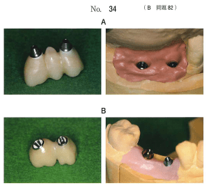
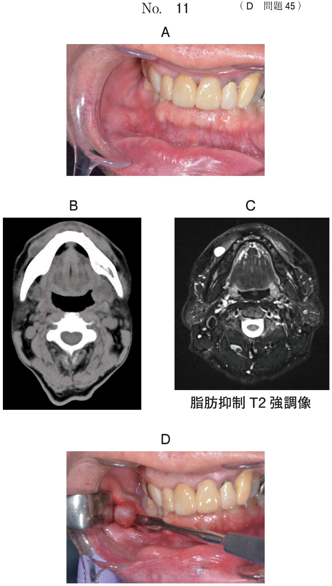
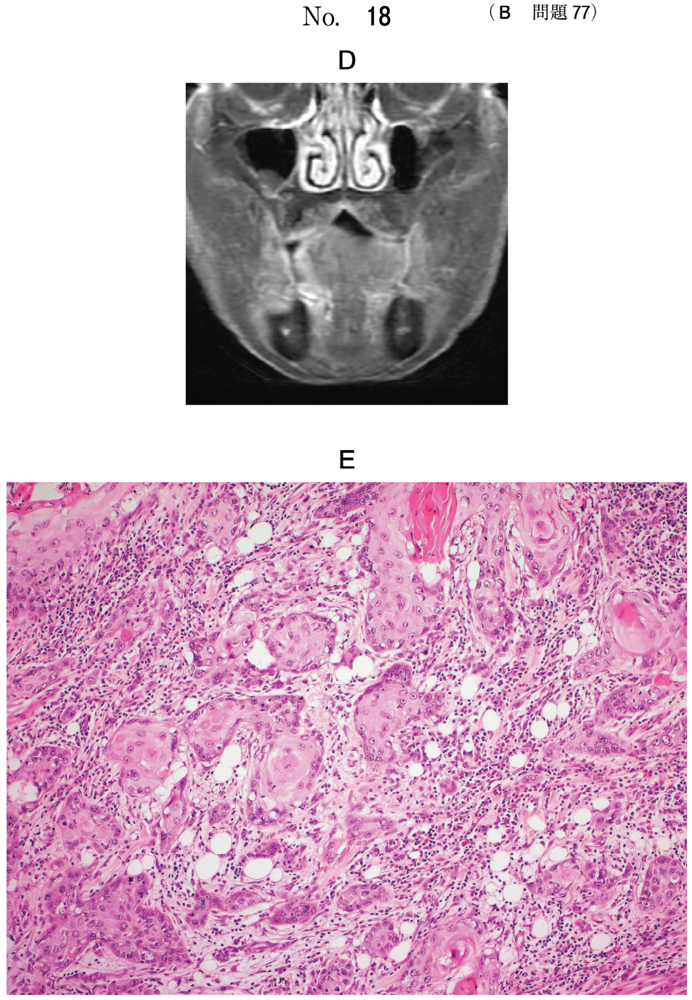
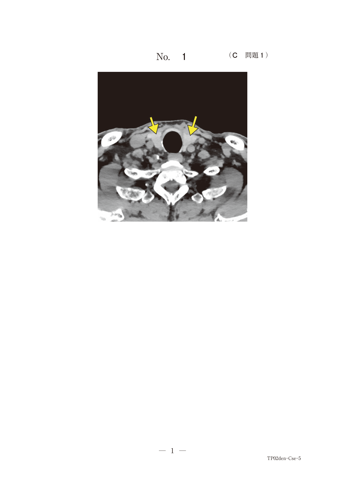

アバットメントは、顎骨内のインプラント体に連結して支台部分を形成し、その上に上部構造（補綴装置）を固定するための構造体である。
インプラント体とアバットメントの連結機構によって、大きく3つに分類できる。
インターナル・バットジョイント
テーパージョイント
| 項目 | 外部連結 | 内部連結 |
|---|---|---|
| 側方力への抵抗性 | 低い | 高い |
| スクリューの緩み | 緩みやすい | 緩みにくい |
| インプラント体への応力 | 集中しにくい | 集中しやすい→亀裂リスク |
| 着脱時の粘膜刺激 | 大きい | 小さい |
| マイクロギャップ | 存在する | 軽減（特にテーパー） |
56歳の女性。咀嚼困難を主訴として来院した。上顎左側と下顎右側欠損部にインプラント義歯による治療を行うこととした。上顎左側に製作した上部構造と模型の写真（別冊No.34A）、下顎右側に製作した上部構造と模型の写真（別冊No.34B）を別に示す。
Aに比べてBの構造が有利なのはどれか。2つ選べ。

【解説】Aは外部連結、Bは内部連結。内部連結はインプラント深部でアバットメントが固定されるため、着脱時の粘膜刺激が少ない。また、外部連結では外部六角に応力が集中するが、内部連結では応力が分散されるためインプラント体の保護に有利。審美性、被圧変位性、咬合接触状態は連結様式による差はない。
2種類のインプラント体の写真（別冊No.18）を別に示す。
アと比較したイの構造の特徴はどれか。1つ選べ。

【解説】アは内部連結、イは外部連結。外部連結（イ）はインプラント体上部で連結するため、応力が分散されインプラント体に亀裂が入りにくい。内部連結（ア）は側方力への抵抗力が強く、スクリューが緩みにくいが、応力がインプラント体内部に集中しやすい。微小漏洩は内部連結（特にテーパー）の方が少ない。
50歳の女性。上顎左側臼歯部欠損による咀嚼困難を主訴として来院した。欠損部にインプラント体を埋入し、最終補綴装置を装着した。治療過程の順に並べた写真（別冊No.29A、B、C）を別に示す。
矢印で示す装置の特徴はどれか。2つ選べ。

【解説】矢印で示されているのはカスタムアバットメント。CAD/CAMを応用して製作される。カスタムアバットメントは患者固有の形態に合わせて製作するため、最終形態を決定するためにプロビジョナルクラウンの装着が必要。遊離端欠損にも適応可能。インプラント体埋入と同日には装着しない（オッセオインテグレーション獲得後）。
インプラント埋入6か月後に行った処置前後の写真（別冊No.5）を別に示す。この後、平行法エックス線撮影を行った。
撮影の目的はどれか。1つ選べ。

【解説】写真はアバットメント装着前後を示している。アバットメント装着後のエックス線撮影の目的はアバットメント適合の確認である。アバットメントとインプラント体の接合部に隙間がないことを確認する。埋入位置の確認は埋入直後に行う。荷重時期の決定はオッセオインテグレーションの評価で行う。